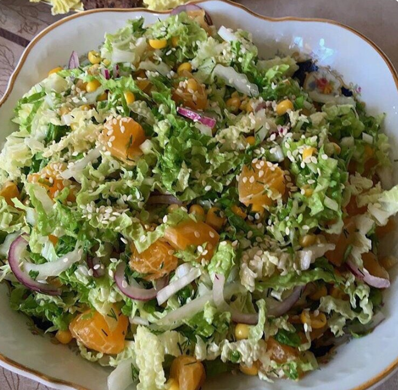

Ингредиенты:
- Пекинская капуста
- Мандарины 3 шт
- Кукуруза консервированная 1 банка
- Красный репчатый лук 1 шт
- Красный лук 1 шт
- Кунжутное масло 3 ст ложки
- Рисовый уксус 2 ст ложки
- Соус чили 3 ст ложки
- Соль
Приготовление:
1. Капусту нарезать соломкой
2. Красный лук полезать полукольцами
3. Очистить и нарезать кусочками мандарины.
4. Добавить кукурузу.
5. Посолим.
6. Делаем заправку из масла, уксуса и соуса и заправляем.